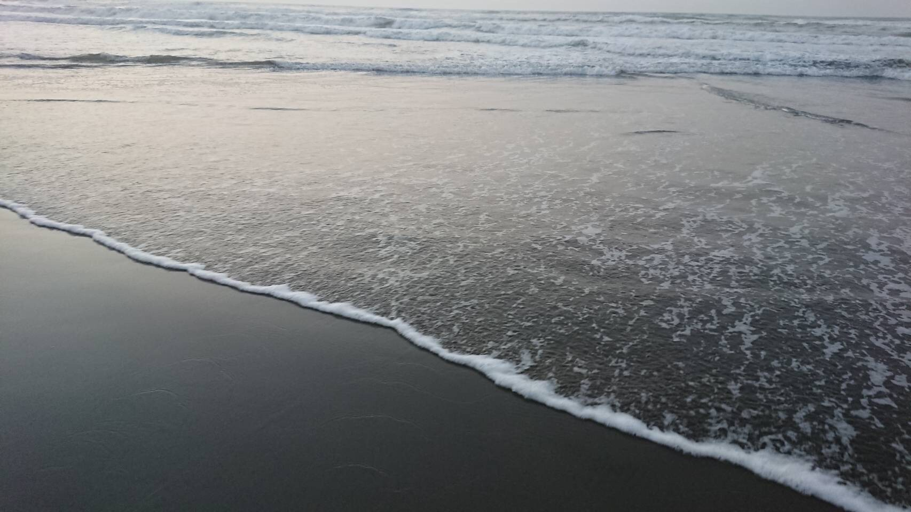
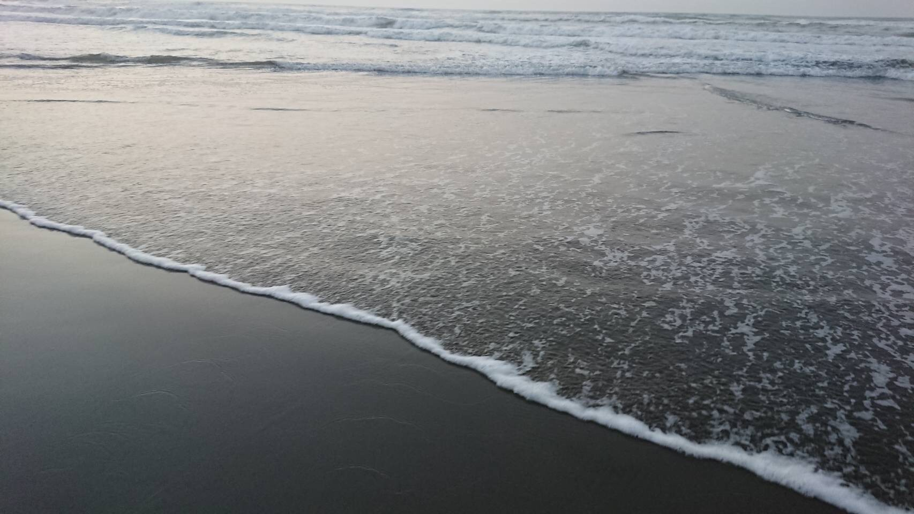

九十九里浜


千葉県東部の刑部岬から太東崎までに及ぶ太平洋沿岸に面する日本最大級の砂浜海岸．
全域を千葉県立九十九里自然公園に指定されており，日本の白砂青松100選，日本の渚百選に選定されている．
千葉県
浦安市にある東京ディズニーリゾートは日本でも1,2位に入る巨大テーマパークであり，他にもホテルやショッピング施設がある．また，太平洋沿岸には，前兆約60kmの九十九里浜がある．
TDL
千葉県浦安市舞浜にある日本最大のテーマパーク群．東京ディズニーランドおよび東京ディズニーシーにより構成され，世界でも有数の集客力を誇る．
パーク周辺にはショッピングモールの「イクスピアリ」やオフィシャルホテルが立ち並ぶ．
九十九里浜

千葉県東部の刑部岬から太東崎までに及ぶ太平洋沿岸に面する日本最大級の砂浜海岸．
全域を千葉県立九十九里自然公園に指定されており，日本の白砂青松100選，日本の渚百選に選定されている．